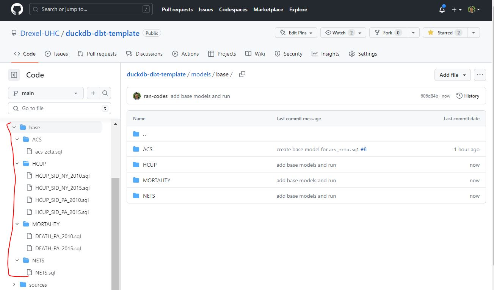
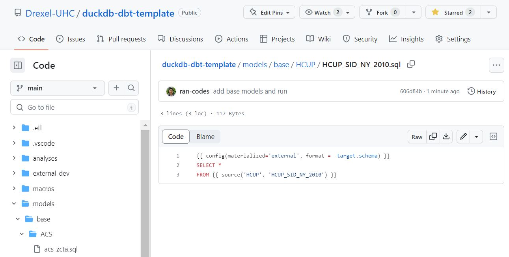
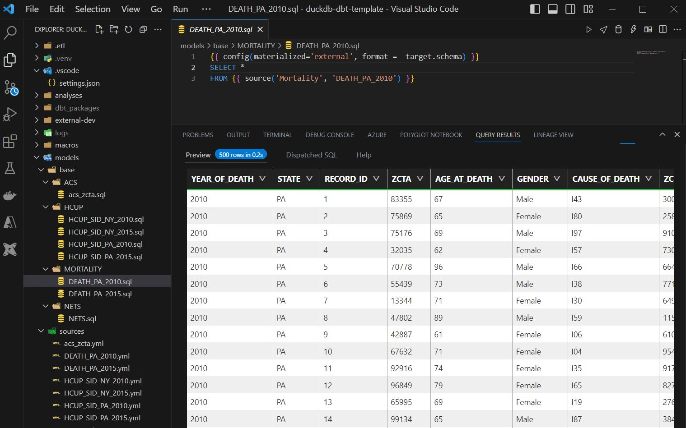

3. Basic Modeling
Now that we have set up DBT and loaded our data.
We previously learned how to load data into DBT. Now we can start orchestrating transformations using DBT. The goal to today is to introduce best practices for project structure and start with basic modeling.
- Introduce DBT structure
- Create base models
- Interact with DBT with VS code
3.1 Intro to DBT Project structure
This section is a curated copy and paste of DBT’s analytics engineering documentation!
3.1.1 Traditional, monolithic data modeling techniques
Before dbt was released, the most reliable way that to model data was SQL scripting.
This often looked like writing one 10,000 line SQL file, or if you want to get fancy, you could split that file into a bunch of separate SQL files or stored procedures that are run in order with a Python script.
Very few people in the org would be aware of my scripts, so that even if someone else was looking to model data in a similar way, they'd start from source data rather than leveraging what I'd already built. Not that I didn't want to share! There just wasn't an easy way to do so.
We could call this a monolithic or traditional approach to data modeling: each consumer of data would rebuild their own data transformations from raw source data. Visualizing our data model dependencies as a DAG (a directed acyclic graph), we see a lot of overlapping use of source data:

3.1.2 What is modular data modeling?
With a modular approach, every producer or consumer of data models in an organization could start from the foundational data modeling work that others have done before them, rather than starting from source data every time.
When I started using dbt as a data modeling framework, I began to think of data models as components rather than a monolithic whole:
What transformations were shared across data models, that I could extract into foundational models and reference in multiple places?
Note: in dbt, one data model can reference another using the ref function.
When we reference foundational data models in multiple places, rather than starting from scratch every time, our DAG becomes much easier to follow:

3.1.3 How to structure/modularize our transformation?
In DBT, the data transformation process usually unfolds in three steps: staging base models (cleaning and prepping raw data), creating intermediate data marts (combining and transforming the prepped data), and building data models (creating the final structured views of the data), akin to preparing ingredients, cooking them, and plating the final dish in a culinary process.


3.2 Create base models
3.2.1 Lets create some base layer models
Again lets go back to our ./models folder. You can organize it any way you want but following best practices you can have a subfolder ./models/base were we can store out base models. Each model is a .sql file. After adding all our base models this folder looks like
After adding all our ./models/base folder now looks like this

An individual data model .sql file looks like this (click here)

The SQL is very minimal. we are just importing the entire table. DBT allows us to use functional programming while writing SQL through jinja templating. In this case anything betwen double brackets {{ … }} will be first compiled by DBT into pure SQL for your database to run. Here we
Tell DBT we want to store the results of this table externally
Tell DBT which source table to pull from.
3.2.2 Run DBT
Lets make sure everything runs. The DBT command to run models is
dbt run The log should look like this
(.venv) PS D:\\git\\duckdb-dbt-template\> dbt run
16:52:44 Running with dbt=1.3.2
16:52:45 \[WARNING\]: Configuration paths exist in your dbt_project.yml file which do not apply to any resources.
There are 1 unused configuration paths:
\- models.hello.example
16:52:45 Found 8 models, 0 tests, 0 snapshots, 0 analyses, 292 macros, 0 operations, 0 seed files, 9 sources, 0 exposures, 0 metrics
16:52:45
16:52:45 Concurrency: 1 threads (target='dev-local')
16:52:45
16:52:45 1 of 8 START sql external model parquet.DEATH_PA_2010 .......................... \[RUN\]
16:52:46 1 of 8 OK created sql external model parquet.DEATH_PA_2010 ..................... \[OK in 0.83s\]
16:52:46 2 of 8 START sql external model parquet.DEATH_PA_2015 .......................... \[RUN\]
16:52:47 2 of 8 OK created sql external model parquet.DEATH_PA_2015 ..................... \[OK in 0.70s\]
16:52:47 3 of 8 START sql external model parquet.HCUP_SID_NY_2010 ....................... \[RUN\]
16:52:47 3 of 8 OK created sql external model parquet.HCUP_SID_NY_2010 .................. \[OK in 0.70s\]
16:52:47 4 of 8 START sql external model parquet.HCUP_SID_NY_2015 ....................... \[RUN\]
16:52:48 4 of 8 OK created sql external model parquet.HCUP_SID_NY_2015 .................. \[OK in 0.70s\]
16:52:48 5 of 8 START sql external model parquet.HCUP_SID_PA_2010 ....................... \[RUN\]
16:52:49 5 of 8 OK created sql external model parquet.HCUP_SID_PA_2010 .................. \[OK in 0.69s\]
16:52:49 6 of 8 START sql external model parquet.HCUP_SID_PA_2015 ....................... \[RUN\]
16:52:49 6 of 8 OK created sql external model parquet.HCUP_SID_PA_2015 .................. \[OK in 0.67s\]
16:52:49 7 of 8 START sql external model parquet.NETS ................................... \[RUN\]
16:52:50 7 of 8 OK created sql external model parquet.NETS .............................. \[OK in 0.49s\]
16:52:50 8 of 8 START sql external model parquet.acs_zcta ............................... \[RUN\]
16:52:50 8 of 8 OK created sql external model parquet.acs_zcta .......................... \[OK in 0.51s\]
16:52:51
16:52:51 Finished running 8 external models in 0 hours 0 minutes and 6.06 seconds (6.06s).
16:52:51
16:52:51 Completed successfully
16:52:51
16:52:51 Done. PASS=8 WARN=0 ERROR=0 SKIP=0 TOTAL=8Note that DBT selection syntax is very flexible meaning we can specify what models to run, how often to run then and to detect if downstreams models need refreshing; see here for mdoel selection syntax documentation.
3.3 Interactive with DBT via VS-code
So far we have used DBT like a compiler. But in reality, it takes a lot of interactive development to get your models where you want them. There are two ways to use DBT as an interactive tool: DBT cloud which is the pricier and fancier option and DBT PowerUser on VS code which works and is free!
So lets try the basics of DBT Poweruser to use DBT interactively in VS-Code.
3.3.2 Click anywhere on you .sql file then hit cntr enter

Here DBT will give you a preview of what this model looks like! Being able to iterative write your SQL without having to compile and work within your IDE will streamline the data model process greatly and makes for a happier developer experience.